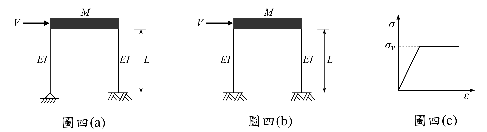
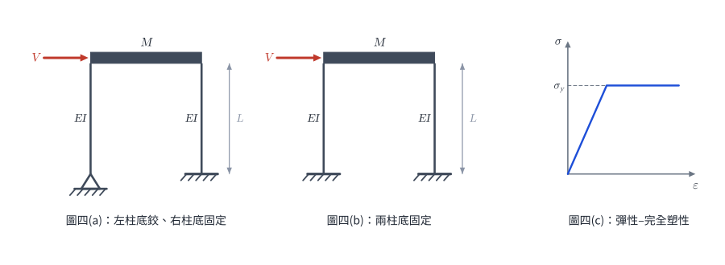
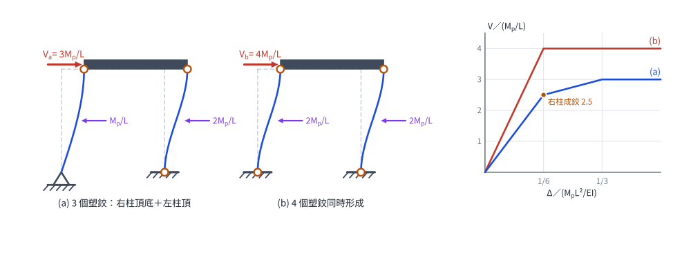

📄 題目正本：考卷原文・附圖・判讀清單（已確認）
SD-2010-4 題目正本
本檔只記錄考卷上寫了什麼、圖上畫了什麼，不含任何解法。解析見同資料夾
SD-2010-4.md。
判讀清單經使用者確認前，狀態為「待確認」；確認後本檔原則上不再修改（改動須回考卷原圖並記 log）。
| 項目 | 內容 |
|---|---|
| 考卷 | raw/exams/SD-2010_結構動力分析與耐震設計.pdf，第 2 頁（背面），第四題 |
| 考年 | 2010（民國99年）專技高考結構工程技師「結構動力分析與耐震設計」 |
| 配分 | 25 分（㈠8、㈡8、㈢9） |
| 附圖 | SD-2010-4-fig-1.png（舊擷取，圖四(a) 右柱底旁有游標）、SD-2010-4-fig-2.png（2026-11-16 由考卷 500 dpi 重擷取） |
| 判讀狀態 | 已確認（2026-11-16，使用者授權依 Claude 建議。原轉錄：2026-11-16 轉錄；PyMuPDF 110 dpi 整頁＋500 dpi 局部放大，PDF 文字層核對原文；盲讀於開啟解析前完成） |
1. 考卷原文（逐字）
四、圖四(a)及圖四(b)皆為剛性樓版構成的剪力房屋，剛性樓版總質量為 $M$，柱為鋼柱，材料性質如圖四(c)所示，柱斷面為邊長 $b$ 的正方形，$EI$ 值為常數，不考慮柱的質量。試分析：
㈠比較圖四(a)及圖四(b)之剪力房屋之振動頻率。（8 分）
㈡比較圖四(a)及圖四(b)之剪力房屋崩塌時之側力 $V$。（8 分）
㈢參考前述之分析結果、塑鉸（plastic hinge）發展情形、柱剪力、可能的變位等，從耐震設計觀點比較圖四(a)及圖四(b)兩者之優劣。（9 分）
2. 考卷給的公式、附表與參數
- 考卷沒有給參考公式。
- 給定：剛性樓版總質量 $M$；兩柱 $EI$ 相同且為常數、柱高 $L$；柱斷面為邊長 $b$ 的實心正方形；鋼材應力–應變為彈性–完全塑性（圖四(c)，降伏應力 $\sigma_y$）；柱質量不計。
- 考卷沒有給：$E$、$b$、$L$、$\sigma_y$ 的數值（全部以符號作答）；阻尼；軸力與 P-Δ 效應。
- 卷首注意事項：㈠可以使用電子計算器。㈡不必抄題，作答時請將試題題號及答案依照順序寫在試卷上，於本試題上作答者，不予計分。考試時間：2 小時。
3. 附圖

證據圖 SD-2010-4-fig-2.png（500 dpi 重擷取；舊圖 SD-2010-4-fig-1.png 內容相同，圖四(a) 右柱底旁有游標）
圖面文字照錄：M、V、EI、EI、L、圖四(a)、M、V、EI、EI、L、圖四(b)、σ、σy、ε、圖四(c)
4. 判讀清單
| # | 項目 | 判讀 | 圖上／題文依據 | 把握 |
|---|---|---|---|---|
| 1 | 柱頂與樓版的接合 | 剛接（剛性樓版、剪力房屋：柱頂不轉動、只隨樓版平移） | 題文「剛性樓版構成的剪力房屋」；圖上柱線直接接入塗黑樓版 | 確定（解讀） |
| 2 | 「崩塌時之側力 V」 | 形成塑性機構（崩塌機構）時的側力，即以全塑性彎矩 $M_p$（實心正方形斷面）求極限側力；定案：主線用 $M_p$，以 $M_y$ 表示的初始降伏側力可作補充對照 | 題文「崩塌時」；圖四(c) 彈性–完全塑性 | 不確定（解讀）；定案如左 |
| 3 | 圖四(a) 支承 | 左柱底鉸支（三角形支承）、右柱底固定 | 500 dpi：左柱底三角形＋短斜線地線；右柱底寬地線＋交叉斜線 | 確定 |
| 4 | 圖四(b) 支承 | 兩柱底皆固定 | 500 dpi：兩柱底同 (a) 右柱符號 | 確定 |
| 5 | 柱高 | $L$，尺寸線上端對齊樓版底面、下端對齊柱底 | 500 dpi：上延伸線與樓版下緣同高 | 確定 |
| 6 | M 的意義 | 樓版總質量（不是彎矩） | 題文「剛性樓版總質量為 $M$」；圖上 M 標在樓版上方 | 確定 |
| 7 | 側力 V | 作用在樓版高度、水平向右（兩圖相同） | 圖上箭頭 | 確定 |
| 8 | 材料 | 彈性–完全塑性，降伏應力 $\sigma_y$，無應變硬化 | 圖四(c) | 確定 |
| 9 | 柱斷面 | 邊長 $b$ 實心正方形，兩柱相同 | 題文 | 確定（解讀） |
| 10 | 所求 | ㈠兩者頻率比較；㈡兩者崩塌側力比較；㈢耐震觀點優劣論述 | 題文 | 確定 |
| 11 | 考卷沒有給 | 數值、阻尼、軸力／P-Δ | 題文 | 確定 |
轉錄：2026-11-16（SD-U3-1 題目正本推廣・組 U3-1-G1）
確認：2026-11-16 使用者授權依 Claude 建議確認（SD-U3-1 題目正本推廣・組 U3-1-G1，關卡一）
考題編號：SD-2010-4
主分類： SD-U3-1 結構耐震設計（含RC結構與鋼結構）
副分類： SD-U1-3 單自由度、多自由度系統之動態分析及應用
分析方法： 概念題（含計算）——雙柱剪力房屋邊界條件比較（固定-固定 vs 鉸接-固定）：頻率比、崩塌側力、塑鉸機制與耐震性能
標籤： 剪力房屋 SDOF 固定固定柱 鉸接固定柱 側向勁度 振動頻率比 塑鉸 崩塌機制 容量設計 鋼柱彈塑性 塑性截面模數 耐震性能比較 雙曲率 單曲率
1. 題目（考卷原文見題目正本）
考卷原文、公式／附表、附圖與判讀清單（已確認）見
SD-2010-4-problem.md。本節只列解題時最容易讀錯的地方與本解使用的記號；題意以題目正本為準。

重繪自考卷附圖，依題目正本判讀清單；本圖攔下的判讀錯誤：圖四(a) 只有左柱底為鉸、右柱底固定，(b) 才是兩柱底固定（本庫舊解把 (a)(b) 對調，並把鉸接那一圖的兩柱都當鉸接）。
常見誤讀
| 項目 | 正確判讀 | 常見誤讀 |
|---|---|---|
| 圖四(a) 支承 | 左柱底鉸、右柱底固定（判讀 #3） | 兩柱都鉸接；或與 (b) 對調（2026-11-16 前本庫舊解的讀法，得 ω_a/ω_b＝2、V_a＝2V_b） |
| 圖四(b) 支承 | 兩柱底皆固定（判讀 #4） | 兩柱鉸接 |
| 柱頂 | 剛接於剛性樓版，只平移不轉動（判讀 #1） | 柱頂鉸接 |
| 崩塌側力 | 以實心正方形斷面的 $M_p$ 形成機構時的側力（判讀 #2） | 用 $M_y$（初始降伏）當崩塌 |
本解記號： $M$ 為樓版質量；$M_p=\sigma_y Z$ 為柱全塑性彎矩；$K$ 為樓層側向勁度。
2. 考題核心精神與出題者意圖（Core Concepts & Examiner's Intent）
核心觀念： 柱底邊界條件對結構側向勁度、崩塌強度、塑鉸發展順序與柱剪力分配的影響——這幾者的差異直接反映耐震設計中「勁度、強度、贅餘度與韌性」的取捨。
出題者意圖：
- 測驗頂端剛接、底端鉸接柱（$k = 3EI/L^3$）與兩端固定柱（$k = 12EI/L^3$）勁度公式，以及並聯柱的組合：(a) $3+12=15$、(b) $12+12=24$（$\times EI/L^3$）
- 測驗塑性彎矩（實心正方形 $Z = b^3/4$）及崩塌機構分析（(a) 3 個塑鉸、(b) 4 個塑鉸）
- 測驗耐震設計的整合判斷能力（勁度、強度、塑鉸發展、柱剪力不均、變位）
3. 解題戰略地圖與陷阱分析（Strategic Roadmap & Trap Analysis）
作戰計畫：
- 讀圖確認邊界條件：(a) 左柱底鉸、右柱底固定；(b) 兩柱底固定；柱頂皆剛接剛性樓版
- 各柱側向勁度 → 系統勁度 → 頻率（SDOF：$\omega = \sqrt{K/M}$）
- 計算塑性彎矩 $M_p$（正方形截面）
- 分析崩塌機構，推導崩塌側力 $V$（虛功法），並以逐步塑鉸法交叉驗證
- 比較耐震性能（勁度、強度、塑鉸數量與順序、柱剪力、變位）
關鍵陷阱：
| # | 陷阱 | 說明 | 應對策略 |
|---|---|---|---|
| ❶ | 看錯支承 | 圖四(a) 只有左柱底是三角形鉸支，右柱底是固定；圖四(b) 兩柱底都固定 | 逐柱看柱底符號；本庫舊解曾把 (a)(b) 對調，並把鉸接那一圖的兩柱都當鉸接 |
| ❷ | 邊界條件勁度公式混淆 | 兩端固定：$k = 12EI/L^3$；頂固底鉸：$k = 3EI/L^3$（差 4 倍） | 鉸接端去掉轉動束制，勁度降為 $1/4$ |
| ❸ | 塑性截面模數 vs 彈性截面模數 | 崩塌用 $M_p = \sigma_y Z$，$Z = b^3/4$；勿與 $S = b^3/6$ 混淆 | 崩塌題用 $Z$；初始降伏才用 $S$ |
| ❹ | (a) 崩塌塑鉸數算錯 | (a) 右柱頂、底各一＋左柱頂一，共 3 個；(b) 每柱頂底各一，共 4 個 | 鉸接柱底本身就是鉸，不再出現塑鉸 |
| ❺ | 頻率比方向寫反 | $\omega_a/\omega_b = \sqrt{15/24} = 0.791$；$\omega_b/\omega_a = 1.265$ | 寫比值時標明分子分母 |
3.5 變數層次分析（Variable Hierarchy Analysis）
複習提示：第一次解題後，在每個卡住的知識點旁標記
⚠；第二次複習時只看有⚠的項目。
最終目標
(一) ω_a vs ω_b；(二) V_a vs V_b；(三) 耐震性能比較
本題關鍵公式（依計算順序）
$\boxed{\cdot}$ = 需由前步驟推導，非題目直接給定的變數
$$\text{Step 1（各柱勁度）: } k_{\text{鉸-固}} = \frac{3EI}{L^3},\; k_{\text{固-固}} = \frac{12EI}{L^3}$$
$$\text{Step 2（系統勁度）: } K_{(a)} = \frac{3EI}{L^3}+\frac{12EI}{L^3} = \frac{15EI}{L^3},\; K_{(b)} = 2\times\frac{12EI}{L^3} = \frac{24EI}{L^3}$$
$$\text{Step 3（頻率比）: } \frac{\omega_a}{\omega_b} = \sqrt{\frac{\boxed{K_{(a)}}}{\boxed{K_{(b)}}}} = \sqrt{\frac{15}{24}} = 0.791 \quad\left(\frac{\omega_b}{\omega_a} = 1.265\right)$$
$$\text{Step 4（塑性彎矩）: } M_p = \sigma_y Z = \sigma_y \cdot \frac{b^3}{4}$$
$$\text{Step 5a（(a)崩塌側力）: } V_a = \frac{2\boxed{M_p}}{L} + \frac{\boxed{M_p}}{L} = \frac{3M_p}{L}$$
$$\text{Step 5b（(b)崩塌側力）: } V_b = 2\times\frac{2\boxed{M_p}}{L} = \frac{4M_p}{L}$$
L1：題目直接給定
| 符號 | 數值 | 說明 |
|---|---|---|
| $M$ | — | 剛性樓版總質量 |
| $EI$ | 常數 | 鋼柱抗彎勁度（兩柱相同） |
| $L$ | — | 柱高度 |
| $b$ | — | 正方形截面邊長 |
| $\sigma_y$ | — | 鋼材降伏應力（彈性–完全塑性） |
| 支承 | (a) 左鉸右固；(b) 兩固 | 題目正本判讀 #3、#4 |
L2：需知識點推導
Step 1–2：側向勁度
| 符號 | 公式／來源 | 卡關? |
|---|---|---|
| $k_{\text{固-固}}$ | $12EI/L^3$（柱頂剛接剛性樓版、柱底固定） | |
| $k_{\text{鉸-固}}$ | $3EI/L^3$（柱頂剛接、柱底鉸） | |
| $K_{(a)}$ | $3+12 = 15\,EI/L^3$ | |
| $K_{(b)}$ | $2 \times 12 = 24\,EI/L^3$ | |
| $\omega_a/\omega_b$ | $\sqrt{15/24} = 0.791$；$T_a/T_b = 1.265$ |
Step 3：塑性彎矩
| 符號 | 公式／來源 | 卡關? |
|---|---|---|
| $Z$ | $b^3/4$（正方形實心截面塑性截面模數） | |
| $M_p$ | $\sigma_y b^3/4$ |
Step 4：崩塌側力
| 符號 | 公式／來源 | 卡關? |
|---|---|---|
| $V_a$ | 右柱（固-固）頂底成鉸 $Q_R = 2M_p/L$；左柱（鉸-固）頂端成鉸 $Q_L = M_p/L$；$V_a = 3M_p/L$ | |
| $V_b$ | 每柱頂底成鉸 $Q = 2M_p/L$；$V_b = 4M_p/L$ |
L3：深層知識（不懂就卡住）
| 知識點 | 說明 | 卡關? |
|---|---|---|
| 剛接 vs 鉸接邊界對勁度的影響 | 兩端固定柱 $k = 12EI/L^3$；一端固定一端鉸 $k = 3EI/L^3$；差 4 倍 | |
| 正方形截面塑性截面模數 | $Z = (b^2/2)(b/4)\times 2 = b^3/4$；$Z/S = 1.5$（形狀因子） | |
| 虛功法求崩塌載重 | 側移 $\Delta = L\theta$，外功 $V L\theta$ = 內功 $\sum M_p\theta$ | |
| 並聯柱剪力分配 | 彈性階段剪力依勁度分配：(a) 右柱 $12/15 = 80\%$、左柱 $20\%$，右柱先降伏 | |
| 雙曲率 vs 單曲率柱 | 兩端固定：雙曲率，最大彎矩 $QL/2$；頂固底鉸：單曲率，最大彎矩 $QL$（在柱頂） |
4. 步驟化詳細計算過程（Step-by-Step Detailed Calculation）
Step 1：各柱側向勁度
兩端固定柱（圖四(a) 右柱、圖四(b) 兩柱）： 剛性樓版使柱頂不轉動，柱底固定：
$$k_{\text{固-固}} = \frac{12EI}{L^3}$$
頂固底鉸柱（圖四(a) 左柱）： 柱底鉸可自由轉動，柱頂剛接剛性樓版：
$$k_{\text{鉸-固}} = \frac{3EI}{L^3}$$
（一）振動頻率比較
系統側向勁度（兩柱並聯）：
$$K_{(a)} = \frac{3EI}{L^3} + \frac{12EI}{L^3} = \frac{15EI}{L^3}, \qquad K_{(b)} = 2 \times \frac{12EI}{L^3} = \frac{24EI}{L^3}$$
自然頻率（SDOF，$M$ 為樓版質量）：
$$\omega_a = \sqrt{\frac{15EI}{ML^3}}, \qquad \omega_b = \sqrt{\frac{24EI}{ML^3}}$$
$$\boxed{\frac{\omega_a}{\omega_b} = \sqrt{\frac{15}{24}} = 0.791 \qquad\text{（即 } \omega_b/\omega_a = 1.265\text{）}}$$
結論：圖四(b) 的振動頻率是圖四(a) 的 1.265 倍；圖四(a) 的週期是圖四(b) 的 1.265 倍。
（二）崩塌側力比較
塑性彎矩 $M_p$（正方形截面 $b \times b$）：
$$Z = \frac{b^2}{2} \times \frac{b}{4} + \frac{b^2}{2} \times \frac{b}{4} = \frac{b^3}{4}, \qquad M_p = \sigma_y Z = \frac{\sigma_y b^3}{4}$$
圖四(a) — 左柱鉸底、右柱固底：
崩塌機構：右柱頂、底各一個塑鉸，左柱頂一個塑鉸（左柱底本為鉸），共 3 個。
- 右柱（雙曲率）：$Q_R L = 2M_p \Rightarrow Q_R = 2M_p/L$
- 左柱（單曲率，對底鉸取矩）：$Q_L L = M_p \Rightarrow Q_L = M_p/L$
$$V_a = Q_R + Q_L = \frac{3M_p}{L}$$
虛功驗證：$V_a L\theta = 3M_p\theta \Rightarrow V_a = 3M_p/L$ ✔
$$\boxed{V_a = \frac{3M_p}{L} = \frac{3\sigma_y b^3}{4L} = 0.75\,\frac{\sigma_y b^3}{L}}$$
塑鉸發展順序（逐步塑鉸法）：
- 彈性階段剪力依勁度分配：右柱 $12/15 = 80\%$，柱端彎矩 $0.8V\cdot L/2 = 0.4VL$；左柱 $20\%$，柱頂彎矩 $0.2VL$
- 右柱頂、底同時於 $0.4VL = M_p$ 成鉸：$V_1 = 2.5M_p/L$，$\Delta_1 = V_1/K_{(a)} = M_pL^2/(6EI)$（此時左柱頂彎矩 $0.5M_p$）
- 之後右柱剪力固定在 $2M_p/L$，只剩左柱勁度 $3EI/L^3$；左柱頂達 $M_p$ 時 $\Delta_u = M_pL^2/(3EI) = 2\Delta_1$，$V = 3M_p/L$，形成機構
圖四(b) — 兩柱固底：
每柱雙曲率，反曲點在柱中點，$Q = V/2$，$M_{\text{頂}} = M_{\text{底}} = QL/2 = VL/4$。
崩塌條件（頂底同時達 $M_p$）：
$$\frac{V_b L}{4} = M_p \quad\Rightarrow\quad \boxed{V_b = \frac{4M_p}{L} = \frac{\sigma_y b^3}{L}}$$
4 個塑鉸同時形成，崩塌位移 $\Delta_u = V_b/K_{(b)} = M_pL^2/(6EI)$。虛功驗證：$V_b L\theta = 4M_p\theta$ ✔
比較：
$$\boxed{\frac{V_a}{V_b} = \frac{3}{4} = 0.75} \quad\Rightarrow\quad \text{圖四(b) 崩塌側力為圖四(a) 的 4/3 倍}$$
（以初始降伏表示時：$V_{y,a} = 2.5M_y/L$、$V_{y,b} = 4M_y/L$，$M_y = \sigma_y b^3/6$。）

圖 3 崩塌機構與推覆曲線（數值取自本節 K_a＝15、K_b＝24 EI/L³ 與逐步塑鉸法）。本圖攔下的錯誤：把圖四(a) 當成兩柱固定或兩柱鉸底——(a) 只有 3 個塑鉸、崩塌側力是 (b) 的 3/4，且右柱先降伏、崩塌位移為 (b) 的 2 倍。
（三）耐震設計觀點比較
| 比較項目 | 圖四(a) 左鉸右固 | 圖四(b) 兩柱固定 |
|---|---|---|
| 側向勁度 $K$ | $15EI/L^3$（較小） | $24EI/L^3$ （較大，1.6 倍） |
| 自然週期 $T$ | 較長（$T_a = 1.265T_b$） | 較短 |
| 崩塌側力 $V$ | $3M_p/L$（較小） | $4M_p/L$ （較大，4/3 倍） |
| 塑鉸數量 | 3 個（右柱頂底＋左柱頂） | 4 個（每柱頂底各一） |
| 塑鉸發展 | 依序：右柱先在 $2.5M_p/L$ 雙端成鉸，再到左柱頂 | 4 個同時形成，塑性變形分布均勻 |
| 彈性期柱剪力分配 | 不均：右柱 80%、左柱 20% | 均勻：各 50% |
| 崩塌時柱剪力 | 右柱 $2M_p/L$、左柱 $M_p/L$ | 兩柱各 $2M_p/L$ |
| 崩塌時位移 $\Delta_u$ | $M_pL^2/(3EI)$（(b) 的 2 倍） | $M_pL^2/(6EI)$ |
| 基礎彎矩 | 左柱底 0、右柱底 $M_p$ | 兩柱底各 $M_p$ |
綜合耐震設計評估：
圖四(b) 優點：
- 勁度與強度較高： 勁度 1.6 倍、崩塌側力 4/3 倍
- 塑鉸多且同時形成： 4 個塑鉸，相同塑性轉角下消散能量 $4M_p\theta_p$，(a) 只有 $3M_p\theta_p$；贅餘度較高
- 柱剪力均勻： 兩柱各分擔一半，沒有單一柱先降伏、受力集中的問題
- 變位小： 崩塌位移只有 (a) 的一半，層間變位角、$P$-$\Delta$ 效應與非結構損害較小
圖四(b) 缺點：
- 勁度大 → 週期短 → 在設計反應譜加速度平台段吸引較大地震力
- 兩柱底都要承受 $M_p$，基礎須能抗彎、費用較高
圖四(a) 優點：
- 週期較長，位於反應譜下降段時，引致地震力可能較小
- 左柱底鉸接，該基礎無彎矩需求
圖四(a) 缺點：
- 勁度、強度都較低（$0.625$ 倍、$0.75$ 倍）
- 兩柱勁度相差 4 倍，彈性期右柱承擔 80% 剪力而先降伏，塑性變形集中在右柱；右柱剪力需求高，須以容量設計檢核剪力
- 塑鉸僅 3 個，能量消散與贅餘度較差
- 崩塌位移為 (b) 的 2 倍，$P$-$\Delta$ 效應與變位相關損害較大；若整棟建築多處採此配置，勁度不對稱還會造成平面上的勁度偏心
總結： 從耐震設計觀點，圖四(b)（兩柱固定）較優：勁度、強度、贅餘度較高，柱剪力均勻、塑鉸同時形成，變位較小。圖四(a) 只在基礎彎矩上較省，但勁度與強度低、受力集中於固定柱、變位大。
5. 關鍵爭議點與進階探討（Critical Issues & Advanced Discussion）
5.1 強柱弱梁（Strong Column-Weak Beam）原則的應用
本題樓版為剛體、沒有可降伏的梁，塑鉸只能出現在柱端，屬「軟層」型機構。實際建築依容量設計應讓塑鉸形成在梁端、柱保持彈性；本題是單純比較柱底邊界條件的模型。
5.2 彈性區間吸收的地震力比較
$K_{(a)} = 0.625K_{(b)}$，$T_a = 1.265T_b$。在相同地震下：
- 圖四(a) 的地震力 $\propto M\,S_a(T_a)$，圖四(b) 的地震力 $\propto M\,S_a(T_b)$
- 若兩者都在反應譜加速度平台段，地震力相同；若 $T_a$ 落在下降段，(a) 的地震力較小，但位移 $S_d = S_a/\omega^2$ 較大
(b) 的崩塌強度仍為 (a) 的 4/3 倍，整體安全餘裕較大。
5.3 $P$-$\Delta$ 效應
圖四(a) 勁度較低、崩塌位移為 (b) 的 2 倍，更容易受到 $P$-$\Delta$ 效應（幾何非線性）的不利影響；穩定性指標 $\theta = P\Delta/(VL)$ 過大時須修正設計地震力。
5.4 本庫舊解的讀圖錯誤（對照）
2026-11-16 前的舊解把圖四(a) 當成兩柱固定、圖四(b) 當成兩柱都鉸底，得 $K_{(a)} = 24$、$K_{(b)} = 6\,EI/L^3$，$\omega_a/\omega_b = 2$，$V_a = 4M_p/L$、$V_b = 2M_p/L$（比值 2），並據此判定 (a) 較優。考卷第 2 頁圖四(a) 只有左柱底為鉸、右柱底固定，(b) 兩柱底固定（題目正本判讀 #3、#4），結論方向相反。
修正日期：2026-11-16（§1 改為指向題目正本，重繪附圖 figs/SD-2010-4-fig-1-problem.svg）
修正日期：2026-11-16（勘誤：圖四(a) 為左柱底鉸、右柱底固定，(b) 為兩柱底固定（舊解對調且把兩柱都當鉸底）；頻率由 ω_a/ω_b＝2 改為 ω_a/ω_b＝√(15/24)＝0.791（ω_b/ω_a＝1.265）；崩塌側力由 V_a＝4M_p/L、V_b＝2M_p/L 改為 V_a＝3M_p/L、V_b＝4M_p/L（V_a/V_b＝0.75）；㈢ 結論改為 (b) 較優；§2–§5 全部改寫；驗證：scripts/fixes/2026-11-16_verify_SD-2010-4.py 直接勁度法數值凝縮＋虛功法＋逐步塑鉸法，MISMATCHES: 0）
修正日期：2026-11-16（非勘誤）圖解補繪：figs/SD-2010-4-fig-3-mechanism.svg（崩塌機構＋推覆曲線，§4（二））